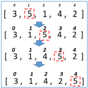

Задача 1
Дано масив 30 випадкових цілих чисел. Підрахувати скільки було обмінів під час сортування бульбашкою
Задача 2
Дано масив 30 випадкових цілих чисел. Підрахувати скільки було обмінів під час сортування змішуванням.
Задача 3
Дано масив 30 випадкових цілих чисел. Підрахувати скільки було обмінів під час сортування включеннями.
Задача 4
Для розглянутих методів сортування спробувати вивести етапи сортування шляхом виведення відповідних таблиць за зразком.

Тобто кожного разу після обміну елементів вивести поточний стан масиву на екран.
Задача 5
Дано масив імен. Застосовуючи відповідне сортування та бінарний пошук визначити, чи є у масиві ім’я «Olga» і під яким індексом.
Задача 6
Дано масив імен. Застосовуючи відповідне сортування та бінарний пошук визначити, чи є у масиві ім’я довжиною 5 символів і під яким індексом.
Задача 7
Cформувати двовимірний масив (4*8) з номерами днів (описати окремий тип для днів). Заповнити його випадковим чином. Підрахувати для кожного рядка кількість неділь.